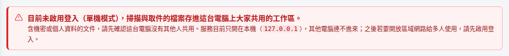
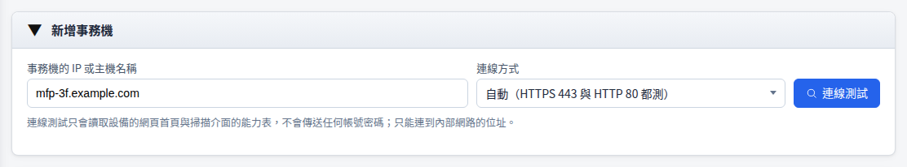
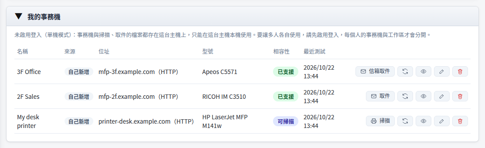

事務機掃描取件（單機版）
未啟用登入時，所有人共用同一個工作區。這套系統架成伺服器給多人使用、卻沒有啟用登入，任何連得到網站的人都看得到掃描與取件的檔案，含機密或個人資料的文件等於外洩。多人使用請先啟用登入，並改看 事務機掃描取件使用說明。
在自己的電腦上叫事務機掃描，或把存在事務機裡的文件取回來，存進這台電腦的工作區。不用帳號，也不用管理員另外設定。
使用前確認
開始之前，先確認這四件事。
未啟用登入時工作區不分帳號；別人也用這台電腦，就看得到你掃描與取件的檔案。
安裝時選擇不開放區域網路（服務只接受 127.0.0.1 的連線）。已經開放的話，執行 sudo jtdt bind 127.0.0.1（Windows 以系統管理員身分執行 jtdt bind 127.0.0.1）。
網址是 http://127.0.0.1:8765/tools/mfp-fetch/。未啟用登入時，這個工具只准在這台電腦本機使用，從別台電腦連進來會被拒絕。
這台電腦要連得到事務機的 IP 或主機名稱；本站只連內部網路的位址。

新增事務機
輸入事務機的位址，連線測試通過後儲存，之後就出現在「我的事務機」。
- 1
輸入位址
在「新增事務機」輸入 IP 或主機名稱。連線方式選「自動」，HTTPS 443 與 HTTP 80 都能連時用 443。
- 2
連線測試
按「連線測試」。只讀首頁與掃描介面的能力表，不送帳號密碼；結果顯示廠牌、型號與這台能做的事。
- 3
儲存
確認型號後按「儲存這台事務機」。



從本站掃描
支援 eSCL 的事務機（相容性標「可掃描」）可以直接從本站叫它掃描。
- 1
放好文件
把文件放在事務機的平台玻璃或送紙器上。
- 2
選掃描設定
在清單按「掃描」，選來源、色彩、解析度、紙張與存檔格式。
- 3
開始掃描
按「開始掃描」。同一台事務機一次只做一件事，其他的自動排隊。
- 4
存進工作區
掃好的檔案存進工作區，可以開啟、下載，或接著用其他工具處理。


取回存在事務機裡的文件
先在事務機的面板上把文件存進信箱、文件伺服器或資料盒，再到本站按「取件」（FUJIFILM 是「信箱取件」）。
- 1
在事務機上存好
依廠牌在面板上選存到信箱、文件伺服器或資料盒。
- 2
填登入資訊
依面板顯示填信箱編號、帳號或 User Code。只送一次，錯了就停下來。
- 3
列出並選位置
按「列出檔案」；有資料夾的在「位置」切換，資料夾有密碼時輸入後按「開啟資料夾」。
- 4
勾選並取件
勾選要的文件，選存成 PDF（建議）後按「取件」，檔案存進工作區。


各廠牌的取件方式與已驗證型號見 事務機掃描取件使用說明。
檔案在哪裡
掃描與取件的檔案都在工作區，可以開啟、下載，或在其他工具裡直接選用。
掃描與取件的檔案存在這台電腦上，不經過任何雲端服務。
到期自動刪除；保留時間與容量在「設定 → 工作區設定」調整。用完的檔案可以先刪掉。
列文件與取件都不會改動事務機上的原件；只有 FUJIFILM 勾選「取件並刪除」時，確認存好之後才刪。
要多人使用時
單機模式沒有帳號，不適合多人使用。
啟用登入後，每個人有自己的事務機清單與工作區，管理員也可以設定共用事務機並指定成員。設定方式見 事務機掃描取件使用說明。
常見問題
還是遇到問題時，先看這幾個。
從別台電腦打開，畫面顯示只能在這台主機本機使用
未啟用登入時，這個工具只准在裝這套系統的電腦上使用（網址要是 127.0.0.1 或 localhost）。要從別台電腦使用，請先啟用登入。
紅色提醒寫著服務開放給網路連線
代表服務綁在區域網路的位址（例如 0.0.0.0），其他電腦連得到這個網站與工作區。只有自己用的話，執行 sudo jtdt bind 127.0.0.1（Windows 以系統管理員身分執行 jtdt bind 127.0.0.1）；多人使用請先啟用登入。
連線測試失敗或列不出檔案
看連線測試的逐步診斷，哪一步失敗就從那一步查；也可以下載診斷報告。KYOCERA 要在事務機上啟用 9091 或 9090 連接埠的文件服務；FUJIFILM 某個連接埠回 406 時，換另一個連線方式。
RICOH 的資料夾要密碼
在「位置」選那個資料夾，輸入資料夾密碼後按「開啟資料夾」。密碼錯了不會自動重試，確認後再輸入一次。
要回報問題
展開「技術細節」，按「複製協定紀錄」貼給客服。協定紀錄不含帳號、密碼與文件內容。